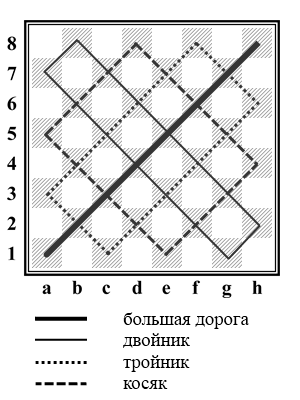
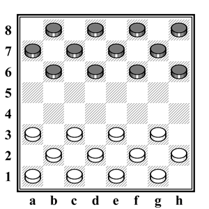

Главная страница
Правила игры
Описание записи ходов
Играть
Шашечная доска
Шашечная доска состоит из 64 одинаковых квадратов, попеременно светлых (белых) и тёмных (светло-коричневых) полей.
Игра ведется только по тёмным полям. Шашечная доска располагается между партнёрами таким образом, чтобы в нижнем углу слева от играющего находилось тёмное угловое поле.

Наименование диагоналей шашечной доски
Ряд полей идущих наискосок от одного края доски до другого образуют диагональ.
Диагонали, упирающиеся одним концом в нижний край (борт) доски, считаются нижними диагоналями, а упирающиеся в верхний край — верхними диагоналями.
Наибольшая из диагоналей, состоящая из восьми черных полей и пересекающая доску слева направо, называется «большой дорогой».
Две диагонали (по шесть полей в каждой), лежащие по обе стороны «большой дороги», и две диагонали (по три поля в каждой), соединяющие первые по концам образуют «тройник». Большие диагонали «тройника» соответственно называются нижним и верхним «тройником», малые — нижним и верхним «тройничком».
Две диагонали, пересекающие «большую дорогу» и «тройник» (по семь полей в каждой), составляет «двойник». Большие диагонали «двойника» соответственно называются нижним и верхним «двойником», малые — нижним и верхним «двойничком».
Следующие за «двойником» две диагонали (по пять полей в каждой) вместе с соединяющими их по концам диагоналями (по четыре поля в каждой) образуют «косяк». Соответственно они носят названия нижний и верхний «косяк», нижний и верхний «косячок».

Шашечная нотация и запись партии
Шашечной нотацией называется система условных обозначений полей доски.
Прямые ряды полей, состоящие из 8 клеток (4 чёрных и 4 белых) и идущие снизу вверх, называются вертикалями.
Прямые ряды полей, состоящие из 8 клеток (4 чёрных и 4 белых) и расположенные слева направо, называются горизонталями.
Восемь горизонталей доски обозначаются цифрами от 1 до 8, восемь вертикалей — малыми латинскими буквами от «a» до «h» (a, b, с, d, e, f, g, h) или в русском произношении — «а», «бэ», «це», «дэ», «e», «эф», «же», «аш». Буквой «а» обозначается крайняя левая вертикаль со стороны играющего белыми (крайняя правая вертикаль со стороны играющего чёрными). Первой горизонталью считается горизонталь, ближайшая к играющему белыми.
Каждое поле доски обозначается в зависимости от того, на какой вертикали и на какой горизонтали оно находится, т.е. каждое поле обозначается сочетанием буквы и цифры, показывающих вертикальный и горизонтальный ряды, на пересечении которых расположено поле.
Пользование нотацией дает возможность записывать как целые партии, так и отдельные позиции, например, расположение шашек при начале партии записывается так: белые — a1, a3, b2, c1, c3, d2, e1, e3, f2, g1, g3, h2 (12); черные — a7, b6, b8, c7, d6, d8, e7, f6, f8, g7, h6, h8 (12).
Для записи хода шашки обозначают сначала поле, на котором шашка стояла, затем ставят тире и записывают поле, на которое она ставится, например: a3-b4. При записи взятия (боя) вместо тире ставится двоеточие.
При взятии одним ходом нескольких шашек запись хода производится следующим образом: сначала записывается поле, с которого шашка начала свой ход, затем ставится двоеточие и обозначается поле, на которое она встала после боя.
Если необходимо отметить направление взятия, то после записи поля, с которого начался бой, последовательно записывают обозначение полей, на которых совершалось изменение направления. Между обозначениями отдельных полей ставится двоеточие.
Шашки
Перед началом игры соперникам предоставляется по 12 простых шашек (плоских, круглой формы): одному — белых, другому — чёрных. Шашки расставляются на чёрных полях первых трёх горизонтальных рядов с каждой стороны.

LLC Russia "Все права защищены"
email: ivan.perfiliev.dev@gmail.com